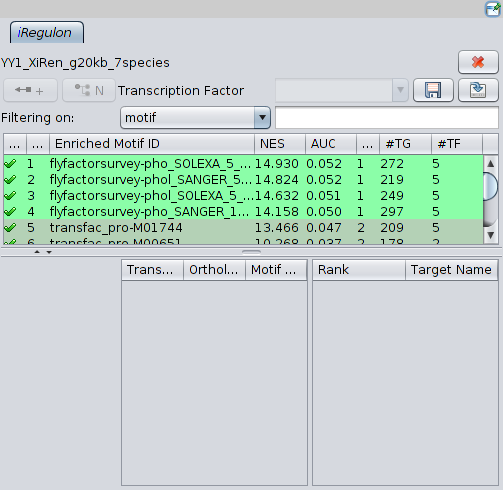

Illustration 1: The input panel of iRegulon
iRegulon was developed in the Laboratory of Computational Biology (S. Aerts lab), University of Leuven, Belgium.
This work is under writing process. For the moment please cite the webpage (lab description) and the Methods paper.
Site:
Paper:
Potier, D., Atak, Z.K., Sanchez, M.N., Herrmann, C. and Aerts S. (2012).
Methods in Molecular Biology vol. 786,
Chapter 18: Using cisTargetX to Predict Transcriptional Targets and Networks in Drosophila.
Springer Science
Developers: Koen Herten & Bram Van de Sande.
Copyright 2012 KU Leuven.
Current version: iRegulon Beta v0.10.3
Contact: Bram Van de Sande Bram.VandeSande@med.kuleuven.be
Stein Aerts Stein.Aerts@med.kuleuven.be
Table of Contents
For this tutorial the gene set YY1_XiRen of the AMADEUS benchmark [Linhart C., Halperin, Y.,and Shamir, R. (2008) Transcription factor and microRNA motif discovery: The Amadeus platform and a compandium of metazoan target sets, Genome Research 18, 1180-1189] is used. This is a set of 698 genes. The known TF is YY1. This TF regulates histone modifications (deacetylases and acetyltransferases). [GeneCards, YY1 transcription factor [www], 2012, GeneCards, http://www.genecards.org/cgi-bin/carddisp.pl?gene=YY1&search=yy1]
Place the jar in your Cytoscape plugins folder. Cytoscape_v2.8.* > plugins.
iRegulon is a Cytoscape plugin.
iRegulon will predict transcription factors (TFs), enhancers and target genes (TGs).
iRegulon was developed in the Laboratory of Computational Biology (S. Aerts lab), University of Leuven, Belgium.
This work is under writing process. For the moment please cite the webpage (lab description) and the Methods paper.
Potier, D., Atak, Z.K., Sanchez, M.N., Herrmann, C. and Aerts S. (2012).
Methods in Molecular Biology vol. 786,
Chapter 18: Using cisTargetX to Predict Transcriptional Targets and Networks in Drosophila.
Springer Science
Developers: Koen Herten & Bram Van de Sande.
Copyright 2012 KU Leuven.
Current version: iRegulon Beta v0.10.3
Contact: Bram Van de Sande Bram.VandeSande@med.kuleuven.be
Stein Aerts Stein.Aerts@med.kuleuven.be
Bram Van de Sande Bram.VandeSande@med.kuleuven.be
Stein Aerts Stein.Aerts@med.kuleuven.be
Open the gene set as a network in Cytoscape (see Cytoscape tutorial). The plugin can be started on 2 different ways:
start the panel (which gives the user a panel at the left),
classical (which gives the user a window).
The 2 ways are the same for the classical analysis (other options of iRegulon aren't ready yet).
For the panel go to Plugins > iRegulon > Get the Panel.
For the frame go to Plugins > iRegulon > Classical.
Both the panel as the frame has the same parameters:
name
This
is the name of the job. It will be the name visible in the output.
This name will also be the suggested name for saving the results.
species
and nomenclature
This
supply some information about the selected nodes.
database
system
This
is the type of database (gene based or region based)
database
This
is the database (There are multiple possibilities).
Overlap
This
is only available with region based databases. The overlap stands
for a percentage. This percentage is the amount of the TF
that must be part of the defined region for the TF
to be added to the set, if the TF
lays on the border of the region.
Delineation
A
regular used region that is predefined.
upstream
and downstream
The
base-pairs upstream and downstream the transcription start site
(TSS). This lets the user choose his/her
preferred region.
The
score threshold (NEScore)
This is the minimal score threshold to
consider a motif as being relevant. The best option for these score
threshold is to choose between 2 or 2.5.
The
ROC threshold for AUC calculation
The AUC value is the cut-off
which to calculate the AUC. This value is used to compare and rank
the motifs. It's a percentage, the cut-off of the ROC on the x-axis.
1 means all genes on the x-axis.
Genomic
Threshold for Visualization
This is the x-axis cutoff for
visualization of the ROC curve. This value corresponds with the top
genes shown on the results.
Minimal
orthologous
This is how orthologous the TF may be. 0 shows all
orthologous TFs, while 1 gives TFs of the same species as the gene
set.
Maximum
motif similarity
This is the percentage of difference of the
sequence of the TF and the sequence of the motif. 0 gives only exact
or very similar matches.
Illustration
1: The input panel of iRegulon
To continue the analysis we use get the panel. All nodes are selected (by Ctrl + a). As name YY1_XiRen is suggested. Because multiple analysis with the same set will be done, the name is changed to YY1_XiRen_g20kb_7species (YY1_XiRen as the set name, g20kb as gene based 20kb around TSS, 7 species).
The set is a set of Human genes, but not with HGNC symbols. Another tool available in Cytoscape is used. CyThesaurus [The BridgeDb framework: standardized access to gene, protein and metabolite identifier mapping services. van Iersel MP, Pico AR, Kelder T, Gao J, Ho I, Hanspers K, Conklin BR, Evelo CT. BMC Bioinformatics. 2010 Jan 4;11(1):5. ] is a tool for converting the names of nodes to other names. For more information about the use of CyThesaurus, see there tutorial. Here the BioMart database is used to convert the Ensemble gene ids to HGNC symbols. By this conversion some genes are lost (685 genes remains).
The set is a set of Human genes, with HGNC symbols. For this analysis the suggested gene based 20kb around TSS, 7 species will be used. The standard parameters are used. For the gene name attributes an other attribute is selected (this with the HGNC gene symbols, and not canonical name (these are ensemble genes)). The amount of valid nodes to submit is 685. Press submit to send the job to the iRegulon server.

Illustration
2: Sending the request to the iRegulon server

Illustration
3: Waiting on the results of iRegulon
The result of the analysis is a new Results panel (on the right of the Cytoscape screen). This panel is separated into 2. Above the list of motifs are visible, below the details of a selected motif in that list. Because with this set it is known that the TF is YY1, YY1 is typed in the search box. The top 10 motifs are motifs of YY1. All motifs with YY1 as transcription factor have a green check in the first column (the others a red cross).

Illustration
4: Results of the iRegulon analysis: above the motif panel, there
under the detail of the selected motif.
The background of the motifs is the color of there cluster. The top 10 motifs are part of 3 different clusters. Important to know is that these clusters are made by cluster-buster. These clusters are made on sequence of the motif (not with TFs or TGs). Clusters can be handy when no motif similarity is used. But here motif similarity is used and standing on the TF YY1 of the motif with rank 1 (flyfactorsurvey-pho_SOLEXA_5_FBgn0002521), the motif of the TF is actually this of the motif with rank 17 (transfac_pro-M01744) (seen in the tooltip). The motif with rank 17 is in another cluster than motif 1. So these clusters only gives a indication. If motif similarity is used, use that to confirm cluster differences.
The table has multiple columns. The first with the checks and crosses indicates the search function. The second column has the rank of the motif. The rank is derived by sorting the motifs by the NEScore. The Enriched motif ID is the official name of the motif. The NES is the normalized enrichment score. This score is an indication of how good this motif is in this gene-set. The AUC is the area under the curve. This is the area under the receiver-operating curve. This value is used to calculate the NES. The clusternumber shows the same thing as the background color of the motifs. The last 2 columns are the amount of target genes and transcription factors.

Illustration
5: Result panel with the details of the selected motif
A detail frame can be obtained by selecting a motif, for example motif with rank 1 and selecting the TF YY1. Right-clicking on this TF will open a new window with the details. Here in this frame it's possible to compare the motifs for the similarity. (In this case the motifs are similar, but reverse complement). In this frame the input parameters are displayed above. There under the motif with all the details. And under the motif the TF is displayed, with the TGs.

Illustration
6: The details of Motif 1 and the transcription factor YY1
The important part of Cytoscape is the visualization of the interactions between genes, proteins, TFs, etc. This can also been done with iRegulon. When a motif is selected, the second row become enabled (when this motif has one or more TFs). First the right TF must be selected. This is possible by selecting it in the combobox. If the wanted TF isn't available for that motif, it's possible to type it in this combobox.
There are a few options to visualize a network of this TF and his TGs. The 2 most used are available as a button in front of the combobox. All draw options are available when right-clicking on the motif.
The possible draw options are:
draw TF, TGs and there interactions on the current network,
create a new network with the selected TF, his TGs and there interactions,
draw the interactions on the current network,
draw a new network with combined edges (from iRegulon).
The first draw action (draw TF, TGs and there interactions on the current network) will add new nodes if the TF or TGs don't already exists. If the TF or TGs already exists there name is colored red in the lists. It may appear that only one node is added to the current network. This is because there is no layout added to the view. So the nodes are structured on a special way, the new nodes can be structured as that manualy, or with a, by Cytoscape provided, layout. (Layout in the Cytoscape menu). The node that is the TF has as attribute Regulatory Function the value Regulator. Also all the drawn motifs of that node are summed in the attribute Motif. The edges has as attributes the motif, Regulatory Gene (the TF), Target Gene (the TG), Regulatory function (predicted) and as interaction regulates and the motif name.
A new network can be created by the create a new network action. In this action a new network is created. The only nodes in this network are the TF and his TGs. These nodes have the same attributes as by the draw action. This is also the case for the edges. The nodes have the default grid layout of Cytoscape (Layout > Cytoscape Layouts > Grid Layout). The new network also has an other view (VizMapper). The TF is a round, green node. The TGs are white, square nodes. The edges are directed from the TF to the TG. Edges are grouped. The edges with the same motif will have the same color.
The possibility to just draw the interactions on a network also exists. This will only draw the edges. Edges can only been drawn when the selected TF exists in that network. When no TF is available, no edges will be drawn.
The combined edges will copy the network to a new network (nodes, edges and layout). All edges drawn by iRegulon will be merged. This means when there are multiple edges between a TF and a TG, these edges will be replaced by one edge. This edge will keep all the information of the different edges. (but some functionality as linkout (only of region based databases, see later) won't work any more).
A new network is created of the TF YY1 and his TGs for motif 1. YY1 is drawn as a green circle. The target genes are white squares. The layout is the regular grid layout of cytoscape.

Illustration
7: The network of motif flyfactorsurvey-pho_SOLEXA_5_FBgn0002521
with as transcription factor YY1 and all his target genes

Illustration
8: Whole iRegulon in one picture: left the input panel, in the
middle a network drawn of a motif, and right the output of iRegulon,
with the drawn motif selected
Saving the results can by clicking the diskette. This will save the results as a .irf. This file can be loaded by selecting Plugins > iRegulon > Load. The output in the results panel will be saved (only that selected run, and no networks). Created networks has to be saved on the regular way in Cytoscape (File > save). The results can also be saved as a tab-delimited file. This by clicking on the symbol next the diskette. The file has the following columns:
rank
motif id
AUC
NES
Cluster Code
Transcription factor
Target genes
The columns are separated by a tab. The transcription factors and target genes are separated from each other by a comma. The first row in the file is a heading.

Illustration
9: An example of the tab-delimited file
Region based analysis are done in a similar way as gene based analysis.
The input has more parameters available (overlap, delineation or upstraem and downstream). First the database system must be changed to region based. Automaticaly the screen is updated and the overlap and the radio-buttons are enabled. A database can be chosen. The database used in this tutorial is the All regulatory features database. In this tutorial the gene based database was with 20kb around the TSS and 7 species. So the delineation 20kb around the TSS is chosen. The overlap is standard 0.4 and is not changed. Because delineation is used, no base-pairs upstream and downstream are needed (this is only when no delineation is used). The name is changed to YY1_XiRen_r20kb_all (of YY1_XiRen as the set, r20kb as region based 20kb around TSS, all as all regulatory features).
The calculations with region based databases require a bit more time than gene based databases. The output of the region based analysis is the same as of the gene based. The same options are available.

Illustration
10: Region based input and output
The results gives slightly different results. So it's recommended to do multiple analysis if the TF isn't known. Here is YY1 one of the top found TFs (actually are the other found TFs biological related to YY1). The available actions are the same as by gene based databases (so see gene based databases).
An extra option comes with region based databases. This option is the link-out. First a new network is drawn of the first motif (flyfactorsurvey-phol_SANGER_5_FBgn0035997), with as TF YY1 (by selecting the first motif, select the transcription factor YY1 and click on the draw network button).
This is done on the same way as for gene based databases.
This is done on the same way as for gene based databases.
Linkout is possible by selecting an edge. This edge must be an edge drawn by iRegulon. Right-clicking on the edge and choose linkout > iRegulon. Your default web-browser will open. The location is showed as a track in the UCSC website. The track has a unique name. This name is the motif name underscore target gene name underscore transcription factor name (here iRegulon_flyfactorsurvey-phol_SANGER_5_FBgn0035997_TRA2B_YY1). The track has a header: iRegulon enhancer location for transcription factor (and his name) and target gene (and his name). In this case is it: iRegulon enhancer location for transcription factor YY1 and target gene TRA2B. If 10x is pressed in the browser, the tracks are zoomed out. Here it is possible to see the exact location of the motif in the genome, in perspective of the target gene.

Illustration
11: The transcription factor binding site (TFBS) visible in the UCSC
browser, after zoom out 10x. The TFBS is located in the first intron
after the transcription start side (TSS).

Illustration
12: The transcription factor binding site (TFBS) visible in the UCSC
browser, after zoom out 10x. The TFBS is located in the first intron
after the transcription start side (TSS).
© 2012 KU Leuven